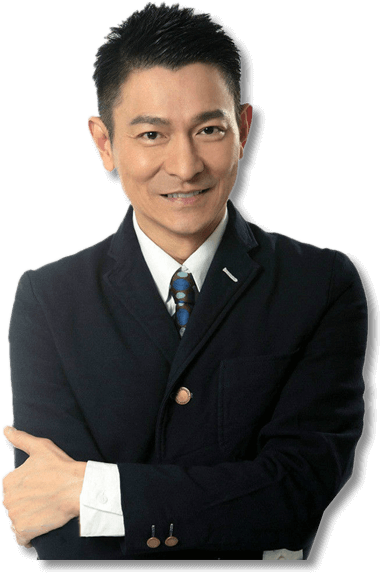
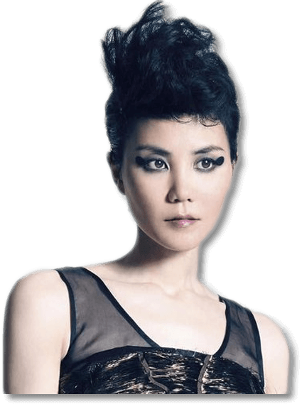

张学友，1961年7月10日出生于香港，中国香港男歌手、演员，毕业于香港崇文英文书院。
1984年因获得首届香港十八区业余歌唱大赛冠军而出道。1985年发行个人首张专辑《Smile》。1993年发行的专辑《吻别》打破华语唱片在台湾的销量纪录。1995年起连续两年获得世界音乐大奖全球销量最高华人歌手奖。1997年参与策划的音乐剧《雪狼湖》在香港连续演出42场。1998年获得第9届台湾金曲奖最佳国语男演唱人奖。2001年获得第23届十大中文金曲金针奖。2004年发行首张个人全创作专辑《Life Is Like A Dream》。2010年12月30日至2011年12月29日，举办“张学友1/2世纪世界巡回演唱会”，打破12个月内巡演观众人数的吉尼斯世界纪录。2013年获得第35届十大中文金曲金曲35周年荣誉大奖。张学友演唱过多种音乐风格的歌曲，尝试过R&B乐风、爵士乐以及用歌剧唱法来诠释歌曲。
1986年出演个人首部电影《霹雳大喇叭》。1989年凭借剧情片《旺角卡门》获得第8届香港电影金像奖最佳男配角奖。1990年凭借武侠片《笑傲江湖》获得第27届台湾电影金马奖最佳男配角奖。1993年出演喜剧片《东成西就》。1996年正式息影。2001年复出拍片。2002年凭借文艺片《男人四十》获得印度新德里电影节最佳男演员奖。2007年在香港星光大道留下手印。2010年主演文艺片《月满轩尼诗》。2015年主演动作片《赤道》。
张学友热心公益慈善。1998年当选香港十大杰出青年。1999年当选世界十大杰出青年。2003年至2009年担任香港演艺人协会副会长。
-
-
-

-

刘德华（Andy Lau），1961年9月27日出生于香港，演员、歌手、作词人、制片人、电影人，影视歌多栖发展的代表艺人之一。
1982年刘德华以全优成绩毕业于TVB艺训班签约出道，同年凭《猎鹰》走红，1983年主演《神雕侠侣》在香港创62点收视纪录，后因拒签五年长约被TVB雪藏。
1982年初涉影坛，相继主演《投奔怒海》、《法外情》、《天若有情》、《暗战》、《无间道》、《盲探》等电影。至2014年已获3届香港电影金像奖最佳男主角奖、2届台湾电影金马奖最佳男主角奖，2005年获颁香港院线“1985-2005年全港最高累积票房香港男演员”奖，2006年被授予香港演艺学院荣誉院士。
1991年刘德华创办电影公司，2005年发起亚洲新星导计划，其出品电影《香港制造》、《疯狂的石头》等受到关注。2005年成为华语电影传媒大奖中国电影百年形象大使，2006年获釜山国际电影节亚洲最有贡献电影人大奖，2012-2013年出任第49届台湾电影金马奖及第七届亚洲电影大奖评审团主席。
1990年刘德华凭专辑《可不可以》走红歌坛，演唱过《忘情水》、《中国人》、《今天》等歌曲。2000年成为吉尼斯世界纪录中获奖最多的香港男歌手。至2014年六度获得十大劲歌金曲最受欢迎男歌星奖，已发行正式专辑近50张，唱片总数愈100张。
刘德华热心公益慈善，1994年创立“刘德华慈善基金会”，2000年被评为“世界十大杰出青年”，2008年被委任香港非官守太平绅士，2010年获颁“世界杰出华人奖”，同年起任中国残疾人福利基金会理事并担任副理事长。
-

张国荣，1956年9月12日生于香港，歌手、演员、音乐人；影视歌多栖发展的代表之一。
1977年正式出道。1983年以《风继续吹》成名。1984年演唱的《Monica》是香港歌坛第一支同获十大中文金曲、十大劲歌金曲的舞曲。 1986年、1987年获劲歌金曲金奖。1987年凭借专辑《爱慕》成为首位打入韩国音乐市场的粤语歌手，华语唱片在韩国销量纪录保持者。1988年，1989年获十大劲歌金曲最受欢迎男歌星奖。1995年专辑《宠爱》在韩国创销量纪录。1999年获得香港乐坛最高荣誉奖金针奖。2000年获CCTV-MTV音乐盛典亚洲最杰出艺人奖。2010年入选美国CNN评出的“过去五十年里全球最知名的20位歌手或者乐团”。他擅长词曲创作，亦担任过MTV导演、唱片监制、演唱会艺术总监等。
1978年开始参演电视剧。80年代中期将事业重心移至影坛，之后成功塑造了宁采臣、旭仔、程蝶衣、欧阳锋、何宝荣等不同类型的角色。1991年凭借《阿飞正传》获得香港电影金像奖影帝；1993年主演的《霸王别姬》是中国电影史上首部获得戛纳国际电影节金棕榈大奖的电影，打破中国内地文艺片在美国的票房纪录，他亦凭此片受到国际影坛的广泛关注，获得日本影评人大奖最佳男主角、中国电影表演艺术学会奖特别贡献奖。1993年担任东京国际电影节评委；1998年成为首位担任柏林国际电影节评委的亚洲男演员；2005年入选中国电影百年百位优秀演员；2010年被美国CNN评为“史上最伟大的25位亚洲演员”之一。
他热心公益慈善，2000年执导公益电影《烟飞烟灭》。 -

王菲（Faye Wong），1969年8月8日出生于北京，中国女歌手、影视演员。
1987年底，王菲由北京到香港定居，经朋友介绍拜戴思聪为师学习唱歌。1989年，她以《仍是旧句子》在香港出道。1991年初，她惜别歌坛，远赴美国修读音乐。1992年，王菲重返乐坛，英文名由Shirley改作Faye并推出大碟《Coming Home》，其中《容易受伤的女人》在香港乐坛走红。1994年，首次获得十大劲歌金曲最受欢迎女歌星奖。1998年，在春晚上演唱歌曲《相约1998》。2002年与Sony Music签约。2003-2005年，举办菲比寻常演唱会。2005年5月，王菲的经理人陈家瑛表示：王菲已开始“无限期休息”。
王菲是首位登上美国《时代周刊》封面的华语歌手，代表作《天空》《红豆》《我愿意》等。2005年与演员李亚鹏结婚生子后一度隐退，2010年，她重返舞台复出。2013年9月13日，王菲与李亚鹏离婚。2014年9月，谢霆锋王菲复合消息被证实。 -

梅艳芳（1963年10月10日—2003年12月30日），出生于中国香港，祖籍广西合浦，歌影双栖发展艺人，香港演艺人协会的创办人之一及首位女会长。
1982年获“第一届新秀歌唱大赛冠军”；推出了个人第一张专辑《心债》，踏入歌坛。1983年，唱片《赤色梅艳芳》主打《赤的疑惑》开始走红，唱片五白金。
1985年-1986年跨年举行了首次个人演唱会，连开十五场，打破了香港歌手首次个唱的场数记录。同期推出唱片《坏女孩》，共卖得40万张（8白金），刷新了香港个人专辑销量纪录，在次年获颁“IFPI全年最佳销量奖”。在1985-1989年连续五年获得香港十大劲歌金曲“最受欢迎女歌星”。《女人花》、《亲密爱人》、《一生爱你千百回》等歌曲在大陆流行。国粤语专辑超过四十张。1998年获得香港乐坛最高荣誉“金针奖”。2009年经“世界纪录协会”评定，以全球个人演唱会总计292场当选“全球华人个人演唱会最多女歌手”。
1987-1988年，凭借《胭脂扣》拿下了金像奖、金马奖、金龙奖和亚太影展四料影后。两夺金像奖最佳女配角。拍戏涉足文艺（《胭脂扣》、《川岛芳子》、《半生缘》、《男人四十》）、动作（《东方三侠》、《英雄本色3》）、喜剧（《审死官》、《醉拳II》、《钟无艳》）等各类角色。
演艺事业外，她热心公益慈善，于1993年7月27日成立了《梅艳芳四海一心慈善基金会》。
2004年1月葬礼期间，治丧委员会以《别矣，香港的女儿！》为题刊登讣闻。
2014年7月18日，梅艳芳铜像竖立在香港星光大道。
-
-